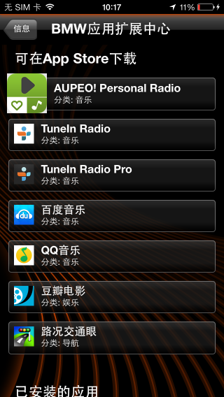

BMW车主们看过来~~~~《路况交通眼》已接入BMW互联驾驶服务，您已可以在车载导航设备上使用iPhone手机中的《路况交通眼》服务！
请参考以下说明，在车载导航设备中使用《路况交通眼》服务。
一、所需设备
- 安装了iOS6或者更高的版本的iPhone 4、iPhone 4S、iPhone 5、iPhone 5S及后续机型；
- 配备CIC系统并具有Apps选项的BMW轿车；
- iPhone USB数据线或BMW设备适配器；
- 《路况交通眼》2.1.0版本或者更高。
二、《路况交通眼》的下载
- 方法一：App Store里搜索“路况交通眼”，点击下载；
- 方法二：App Store下载《BMW互联应用》，运行之后点击”信息”标签页，点击”BMW应用扩展中心”，之后在列表里选择路况交通眼，将跳转到App Store的下载页面。如图：

三、使用方法
- 使用iPhone USB数据线或者BMW设备适配器，连接iPhone至BMW车载设备。
- 在iPhone上启动《路况交通眼》；
- 等待《路况交通眼》与BMW车载设备连接成功；
- 使用BMW iDrive控制钮，选择“互联驾驶――应用”下的《路况交通眼》；
- 全域路况、前方路况及商圈路况在车载设备上一目了然。
四、注意事项及声明
- 通过BMW车载设备使用《路况交通眼》将通过手机数据通道下载数据，产生手机数据流量费用，该费用由手机网络运营商收取；
- 以下声明引自《路况交通眼》服务条款 第3.2条，请您注意：
“用户驾驶交通工具（包括但不限于机动车或非机动车）时操作手机可能会导致严重的交通事故及人身伤害，用户必须充分意识此类风险的存在并避免在驾驶或非机动车的同时操作手机。用户完全知晓驾驶交通工具时使用本服务所存在的风险（包括但不限于受到第三方伤害及侵权或对第三方造成伤害及侵权），明确同意由此产生的相关责任将完全由用户自己承担，本公司不承担任何责任。”